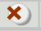
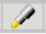

Tools and Accommodations
The table below shows how to use some of the tools you will find on the Georgia Milestones Assessment.When you are taking the test, click the picture of a tool (icon) at the top of the screen to use the tool. When you finish using the tool, click on the picture to put it away again.

• Click on the red "X" icon. Then click on an answer and a red "X" will appear and cross it out.
• Use the eraser tool to clear an “X,” or turn off the option (Answer Choice) eliminator and then click on the answer choice with the normal pointer to select that answer.
• When the option (Answer Choice) eliminator is turned off, you can still click on an answer choice you eliminated if you want to select that answer.

• Hold down the mouse button and drag the highlighter over the area that you wish to highlight and then release the mouse button.
• Highlighting can be removed with the eraser. Click the eraser icon and then click the area to be cleared.
• Click the eraser icon again to turn off the eraser tool.

• Click the eraser icon.
• To erase a red “X,” click the “X,” and it will disappear.
• You can also use the eraser to remove highlighting.
• When you are done using the eraser, click the eraser icon again to turn off the eraser tool.
• The numbered box at the bottom of the screen for that question will be shaded yellow.
• Then, instead of “Mark for Later Review,” you should see the word “Unmark.” Click "Unmark" and the yellow in the numbered box will disappear.
• Marking questions is not necessary, but it may help you keep track of questions you want to review later.

• Click the calculator icon to turn on the calculator.
• Use your mouse pointer to perform calculations by clicking calculator buttons.
• Move the calculator by clicking the mouse pointer in the calculator’s title bar and dragging the calculator.
• Close the calculator by clicking the “X” in the calculator title bar.

• Click the scratchpad icon to open the scratchpad.
• Click the mouse inside the borders of the scratchpad and begin typing notes.
• Click with your mouse pointer on any part of the border to drag the scratchpad around the screen.
• Close the scratchpad by clicking the “X” in the scratchpad title bar.

• Click the Magnifying Glass icon to turn on the magnifier.
• Click in the magnifier frame and drag with the mouse pointer to move the magnifier frame over the text you want to read.
• Click the magnifying glass icon in the toolbar to close it.

• Click the icon that has the letters “RC” on it. The “RC” stands for “Reference Card.”
• Click the RC icon and the mathematics reference card will open.
• You will need to scroll down to see all of the information. Look at the scroll bar on the right side of the reference sheet. Now scroll down slowly by clicking on the down arrow.
• Click the blocking ruler icon to turn on the blocking ruler.
• Click anywhere on the ruler and drag it with your mouse pointer to move the ruler as you read.
• Click the blocking ruler icon again to turn it off..
Accommodations
The table below lists some special accommodations you may see during your test. Accommodations are presented here the same way they would be experienced during the test. A student’s Individualized Education Plan (IEP) or 504 plan indicates whether the student needs to use an accommodation and how it is to be set up.(Font & Background Color)
• The high contrast colors must be set before testing by the test coordinator. The practice examples use yellow text on a black background. Other colors may be used during the actual test, as required by the student’s IEP or 504 plan.
• The question may use different colors than the answer choices.
• The background color may be lighter or darker than the font color as you require.
• Font size must be set before testing by the test coordinator.
• Start the screen reader by clicking on a paragraph. The screen reader stops when it reaches the end of the paragraph.
• You can also stop the screen reader by clicking the Stop Reading icon.
• Change the volume by sliding the control to the left (softer) or right (louder). The volume will change to the new setting the next time you click a paragraph.